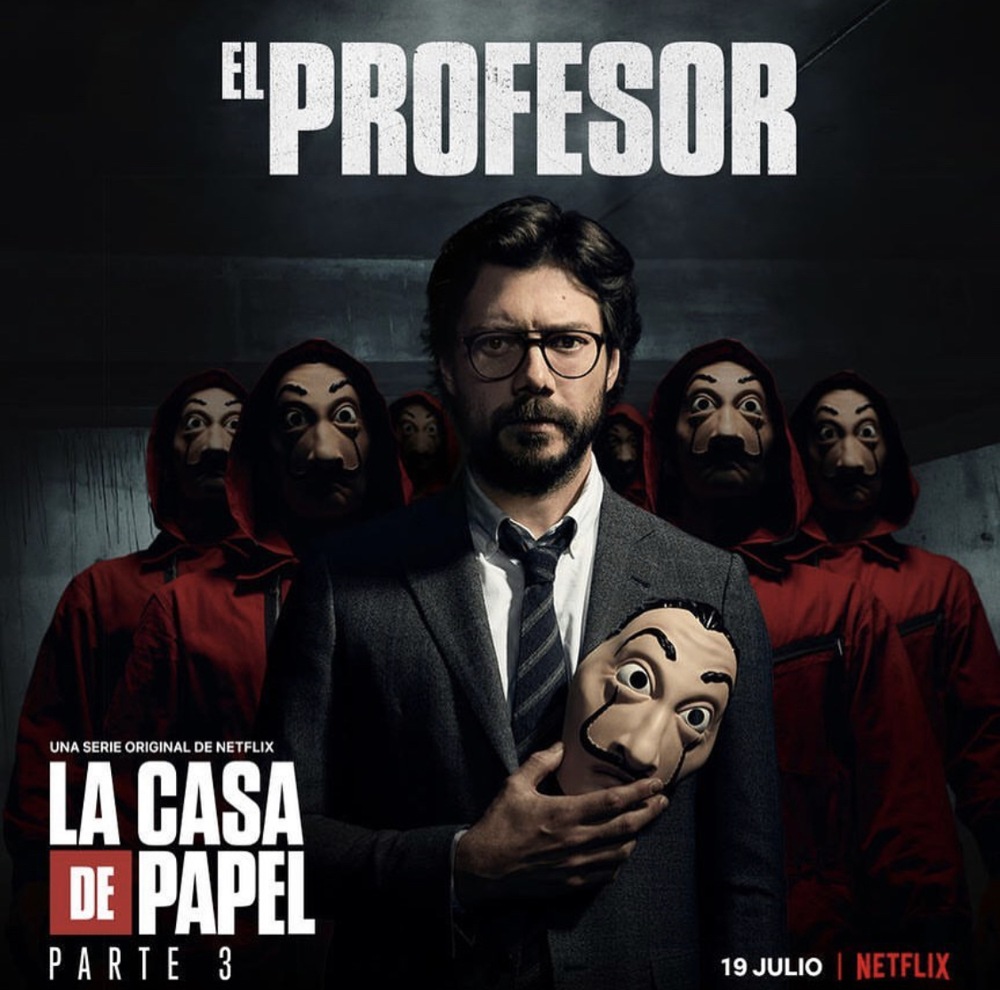
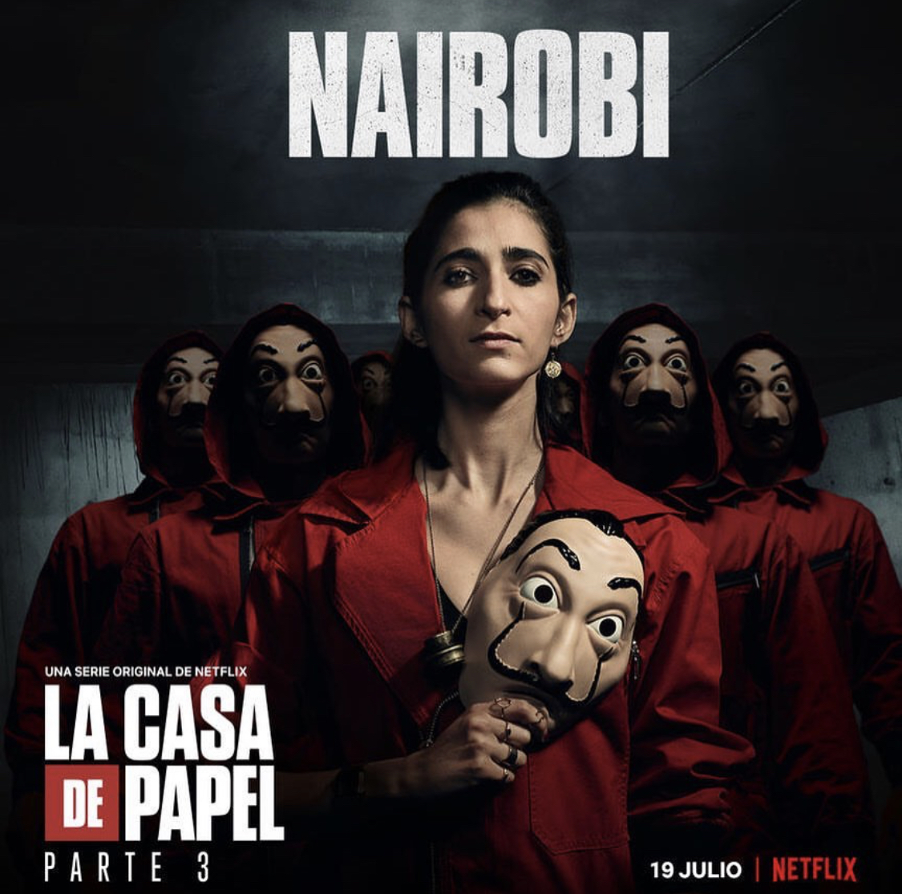

The Professor, in the first and second season, we see him go over plans with the crew. Although the idea to rob the Royal Mint of Spain came from his father, he reviews, revises, and sets in motion the heist. He was meticulous with every single aspect of the robbery. He had a backup plan to the backup plan. He already knew what people’s reactions would be in different situations. His attention to detail and accuracy to the probability of outcome was impeccable. For these reasons, I assigned the zodiac sign of Virgo to the Professor. He is shy and detail oriented. He is clean and neat and doesn’t like people touching his stuff.
There is a scene with Tokyo and The Professor at the Toledo house, where Tokyo makes fun of The Professor’s pjs and touches his origami birds. The moment she touches his origami birds you can immediately see that he is uncomfortable. This Virgo likes organization, neatness, and cleanliness.

Nairobi was a counterfeiter after her boyfriend left her pregnant and abandoned her. Her end goal is to be with her son. Throughout the seasons, we see that Nairobi is detail-oriented like a Virgo. In Season 2, the elderly worker helping produce the money states that she has been the best boss that he has every had.
Also, Nariobi possesses the Virgo quality of helping others. She is always willing to help others in need. In Season 1, she sees that the Ambassador’s daughter is being bullied by her classmates. Nariobi talks to her and empowers her to stand up for herself. In true Virgo form, Nariobi has a good understanding of situations and provides an effective solutions to problems.

Andrés de Fonollosa Gonzalvez a/k/a Berlin is a jewel robber who lives an extremely expensive lifestyle. We see in Season 3 that Berlin was staying at a monastery and had acquired some lavish paintings. I associate Berlin with Gemini since Geminis are known to be duplicitous, liars, and smooth talkers. Gemini is ruled by the planet Mercury. Mercury, also known as Hermes, was known to be a cunning trickster, stealing things from the other gods and hiding them. Not that Berlin steals and hides things but he is a robber.
Also, Berlin is unable to empathize with other people although, he also has a compulsive need to please others especially when he interacts with the hostages. I have noticed that air signs like to please people in some way, shape or form. Berlin’s behavior is ever changing. He is courteous only when people follow his orders. You don’t know when he will be happy or sad or act normal especially since he has a terminal illness. As a Gemini, he was flexible and is able to change and adhere to situation at hand with a drop of the hat.

When I hear her says “Jarana” (War), I immediately think of Aries. Aries is about war and fighting. Tokyo was born a warrior. She joins the heist because she has nothing to lose. She is passionate and short-fused. Many of her decisions come from impulse and how she is feeling at that precise moment. Her impulsiveness leads her to be irresponsible. She only sees the consequences of her actions when its too late. It appears that she only cares about herself. She loves intensely, passionately, and doesn’t hold back.
In Season 3, she’s on a beautiful secluded island with her lover, Rio, enjoying life. However, her restlessness starts to show when she invites people from a boat to party with them. She has a fire within her and she knows cannot be contained. Rio knows it too. That’s why she decides to leave Rio and let loose her wildness. It’s not that she doesn’t love him, she simply bores easily. Again, she is only thinks of herself and doesn’t realize how much she is hurting Rio.
He is one brute that doesn’t say much but lets his actions do the talking. He’s a tank on the outside and a big old teddy bear on the inside. Some of his qualities are the same as a Taurus. He is patient, strong, devoted, and stubborn. Taurus love passionately, similar to a Scorpio, but they love with the intention of possessing you. They treat the ones they love like possession. Their possession over someone is the way they show love, protection, and devotion. Love to them has to be tangible since they connected with physical bodies.
Season 3, we see Helsinki have a strong and physical connection to Palermo. However, Helsinki knows that he can’t possess Palermo for various reasons. One of the reasons is that Helsinki is old-fashioned, loyal, and persistent and Palermo is none of those things. Palermo is also quick to say that he doesn’t want those things but we all know deep down inside he wanted all that with Berlin.
What sign is able to comprehend and even tame a wild Arian? A Libra. These two, Rio and Tokoyo, are able to keep each other in check. Rio is the epitome of a Libra. He’s handsome, intelligent, and a people pleaser. Don’t let his good looks fool you since he is a hacker/ child prodigy who learned to program at age 6. He’s probably too intelligent for his own good.
What sign is able to comprehend and even tame a wild Arian? A Libra. These two, Rio and Tokoyo, are able to keep each other in check. Rio is the epitome of a Libra. He’s handsome, intelligent, and a people pleaser. Don’t let his good looks fool you since he is a hacker/ child prodigy who learned to program at age 6. He’s probably too intelligent for his own good.
Scorpios are the zodiac sign that has it the hardest in life. These people go through a lot in life and if they’re not careful can be susceptible to drugs. Denver is not born with a silver spoon in his mouth. In fact, he’s born to a drug addict mother and an average hard working father. His life has not been easy and that is why he become a thug. Eventually, he turns to drugs as a way of coping with his insecurities and inadequacies.
Despite all these hardships, he meets and falls in love with Monica. Like a true Scorpio in love, he immerses and loses himself to the point of being transformed by love. Monica brought out in him that gentle, protective, and loyal side that is Scorpio. He also displays extreme romantic behavior like getting married to Monica in Bali with all the elephants and rituals.